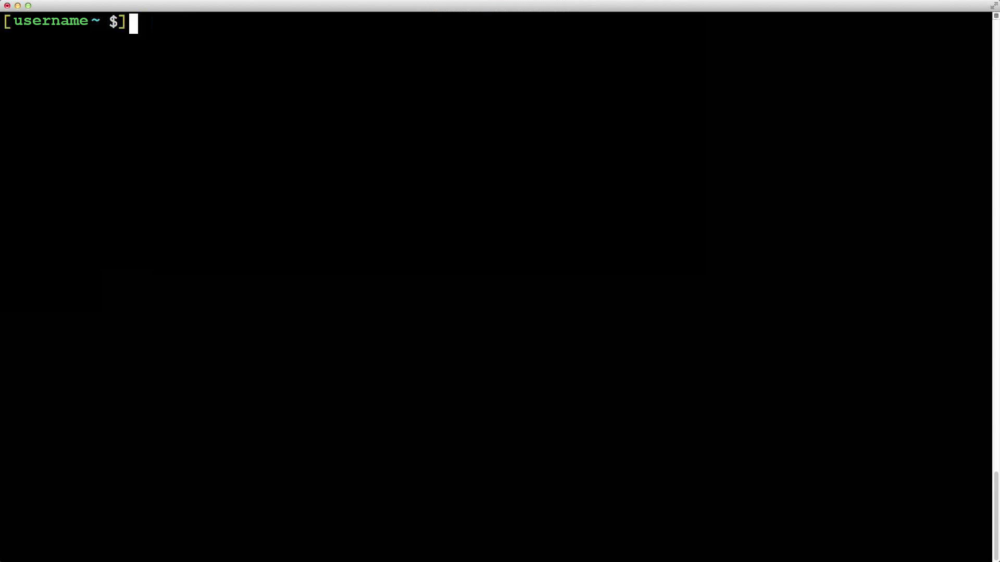

Полезные алиасы

Yours Truly, Famous Inc.
Виталий Рыбка
# Select whether you want to see the copyright# notice during startup.# Default is ‘on’, as you probably noticed.startup_message off
# Change or display the status of automatcally# saving layouts.layout autosave on# Window list at the bottom.hardstatus alwayslastlinehardstatus string "%-w%{= BW}%50>%n %t%{-}%+w%<"
hardstatus string "%-w%{= BW}%50>%n %t%{-}%+w%<" можно почитать тут.
(Ctrl+a c), выполнить переход в нужную директорию и т.д.;
Ctrl+a :remove.
wget --spider https://github.com/tmux/tmux/releases/download/2.2/tmux-2.2.tar.gz - проверим доступность файла по ссылке
wget -P ~/ https://github.com/tmux/tmux/releases/download/2.2/tmux-2.2.tar.gz - если все норм, скачиваем архив себе в домашнюю директорию
tar -xzvf ~/tmux-2.2.tar.gz - нам нужно разархивировать содержимое архива, а сам архив можно удалить
./configure && make - нам нужно выполнить сборку, чтобы можно было обращаться по имени tmux
screen;
tmux сохранил доступы
tmux сохранил доступы:
if [ ! -z "$SSH_AUTH_SOCK" -a "$SSH_AUTH_SOCK" != "$HOME/agent_sock" ]; thenunlink "$HOME/agent_sock" 2>/dev/nullln -s "$SSH_AUTH_SOCK" "$HOME/agent_sock"export SSH_AUTH_SOCK="$HOME/agent_sock"fi
tmux attach || tmux new - если есть запущенная сессия tmux подключаемся. Если нет - создаем новую сессию
tmux ls - список сессий tmux для текущего пользователя
_.
path=~/Docs$path или ${path}./script.sh arg1, arg2, arg3, …, argN$1 - первый аргумент$2 - второй аргумент$0 - имя скрипта$# - количество аргументов#!/bin/bashecho "Hello, world!"./hw.sh # вызов
#!/bin/bashvar1=$1var2=$2echo "Arguments are \$1=$var1 \$2=$var2"./variables.sh var1 var2 # вызов
Обратите внимание на то, что в конце каждой строки отсутствует точка с запятой.if [[ condition ]]then# action, if condition is truefi
-z <string> # string is empty
-n <string> # string is not empty
<str1> == <str2> # strings are equal
<str1> != <str2> # strings are not equal
-eq, (==) # equal
-ne, (!=) # not equal
-lt, (<) # less than
-le # less than or equal
-gt, (>) # more than
-ge # more than or equal
-e <path> # path is exist
-f <path> # is file
-d <path> # is directory
-s <path> # file size more than 0
-x <path> # file is executable
! # denial of boolean expression
&& # boolean “and”
|| # boolean “or”
Существует еще один вид конструкцииif [[ condition ]]then# action, if condition is trueelse# action, if condition is falsefi
if/else - это if/elif/else
# if_elif_fi.sh#!/bin/bashif [[ -f $1 ]]thenecho "Removing file"rm $1elif [[ -d $1 ]]thenecho "Removing dir"rm -r $1elseecho "Can't remove $1"fi
for i in arraydo# дейтсвие, переменная i каждый раз принимает# следующее значение из arraydone
# for.sh#!/bin/bashfor i in 1 2 3 4 5dofile_name=file${i}.txtif [[ -e $file_name ]]thencontinuefiecho "Creating file $file_name"touch $file_namedone
while [[ condition ]]do# action, while condition is truedone
# while.sh#!/bin/bashagain="yes"while [ "$again" = "yes" ]doecho "Please enter a name:"read nameecho "The name you entered is $name"echo "Do you wish to continue? (yes/no)"read againdone
dist, build для конкретной темы
path
git diff origin/master origin/%branch-name% > ~/%path_to_diff_dir%/diff-%branch-name%.diff
%branch-name% # имя ветки для которой нужно создать diff
gdd %branch-name% - финальный вид командыgdd#!/bin/bash# killd.sh# kill all processes from diapasonstart=$1end=$2end=$2while [[ $start -le $end ]]dokill -9 $startstart=$((start + 1)) # !!!done
let "start = $start + 1"arm migration %migration_name%. Прошу обратить внимание - каждую миграцию нужно добавлять отдельно.
am.sh migration1 migration2 ... migrationN# workers[code goes here] - ???
Минусы подхода:# interactionsnode server.js
%path_to_repositories%
live ветке и в состоянии Already up-to-date. Бывают даже проблемы, когда репозиторий находится на ветке live, но не в состоянии Already up-to-date. И тогда тоже нужно вручную сделать git pull origin live.
git branch - как часто вам приходиться набирать эту команду в течении дня ?
git status - а эту команду ?
git push origin %branch-name% - а эту команду ?
git commit -m 'some comments' - а эту команду ?
...
screen.